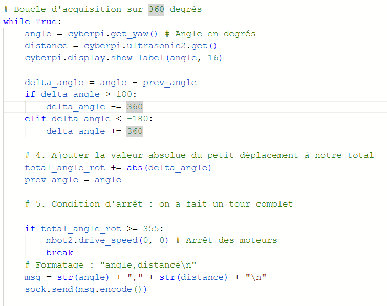
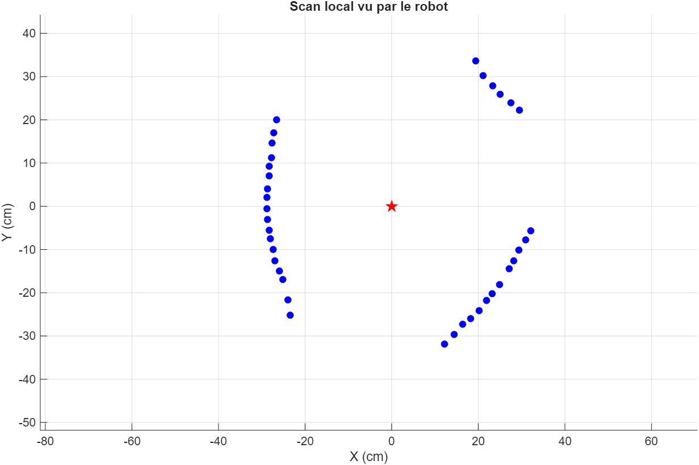
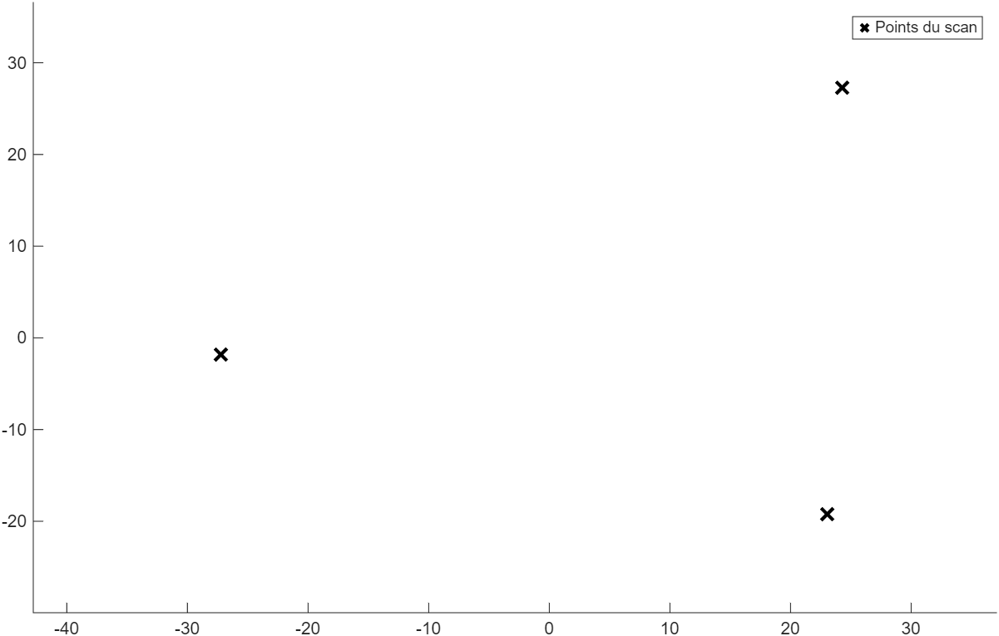

Localisation et navigation autonome d'un robot mBot2
Capteur ultrason, algorithmes de recalage (K-Means, Procruste) et communication TCP/IP avec MATLAB.
Introduction du projet
Dans le cadre de mon stage, j'ai développé un système de localisation pour un robot mBot2. L'objectif était de permettre au robot de se repérer dans un espace restreint en utilisant uniquement son capteur à ultrasons et son gyroscope, puis de se diriger vers une cible précise. On commence par créer une carte de l'environnement d'étude, où les landmarks sont positionnés selon leurs coordonnées (x, y) dans le repère de la carte choisie. Dans ce cas, 3 boîtes sont choisies et positionnées autour du robot. L'environnement de l'étude doit être stérile pour éviter de fausses mesures. La complexité réside dans le fait que le robot doit scanner son environnement, identifier des points de repère et calculer sa position globale en communiquant avec un serveur MATLAB via une connexion TCP/IP.

Étape 1 : Acquisition de données
La première partie du projet se déroule directement sur le microcontrôleur du robot (CyberPi). Le script Python embarqué commence par établir une connexion Wi-Fi et se connecte au serveur MATLAB via un socket TCP sur le port 5000.
Une fois connecté, le robot effectue une rotation sur lui-même à vitesse réduite pour réaliser un balayage de son environnement. À une fréquence de 20 Hz, il relève deux informations :
- L'angle actuel via son gyroscope intégré.
- La distance de l'obstacle mesurée par son capteur ultrason.
Ces données sont envoyées en temps réel à MATLAB sous le format angle,distance.
Le robot s'arrête lorsqu'il a effectué un tour complet (soit un cumul de rotation d'environ 355 degrés)
et envoie un signal "END".

Étape 2 : Traitement et localisation sur MATLAB
Étant donné la faible puissance de calcul et le stockage restreint du microcontrôleur, le traitement des données est effectué sur un PC. Le script MATLAB écoute sur le port 5000 et réceptionne le nuage de points. Pour éviter le bruit des capteurs vis-à-vis des obstacles environnants qui ne sont pas répertoriés dans la carte globale, les distances irréalistes ou erronées (hors de la plage 0–40 cm) sont filtrées. Cette distance peut être adaptée à l'environnement de l'expérience.
1. Clustering avec K-Means
Les coordonnées polaires reçues sont converties en coordonnées cartésiennes locales dans le repère
robot. À ce stade, le robot « voit » des nuages de points. Pour identifier les trois boîtes qui nous
servent de repères (landmarks), on utilise l'algorithme d'apprentissage non supervisé
K-Means. En demandant 3 clusters (kmeans(X_scan, 3)), l'algorithme trouve
le centre de gravité de chaque boîte dans le repère local du robot.


2. Data association et analyse de Procruste
Nous connaissons la position absolue de nos 3 boîtes dans la pièce (la carte globale). Le défi est de faire correspondre nos 3 boîtes « locales » avec ces 3 boîtes « globales ». Puisque nous ne savons pas quelle boîte est laquelle, le script teste toutes les permutations possibles (6 combinaisons).
Pour chaque permutation, une analyse de Procruste est effectuée. Cet algorithme calcule la meilleure translation et rotation pour superposer la carte locale sur la carte globale. La combinaison qui donne la plus petite erreur est conservée.
Mathématiques de l'erreur de Procruste
L'algorithme de Procruste permet de recaler le scan local (nuage de points mobile) sur une carte globale (points de référence fixes).
1. Le modèle de transformation
L'algorithme cherche à résoudre l'équation de transformation rigide suivante :
- Xlocal : matrice (3×2) des amers détectés.
- T : matrice d'isométrie (rotation).
- c : vecteur de translation (position du robot).
2. Définition de l'erreur quadratique
L'erreur renvoyée par la fonction procrustes() (notée d) est la
somme des carrés des résidus. Elle mesure l'écart entre les positions réelles des
boîtes et les positions estimées après transformation :
Plus d est proche de 0, plus l'association entre les points du scan et les points de la carte est cohérente.
3. Étapes de minimisation
A. Centrage (translation) — pour isoler la rotation, on centre les deux nuages de points en soustrayant leur moyenne respective (barycentre) :
B. Rotation (SVD) — la rotation optimale T est trouvée via une décomposition en valeurs singulières (SVD) de la matrice de covariance M :
M = U Σ VT
T = U * VT
4. Application à la localisation
| Composante | Résultat robotique |
|---|---|
| Erreur (d) | Validation de la correspondance (data association). |
| Translation (c) | Coordonnées (X, Y) du robot dans la carte. |
| Rotation (T) | Orientation (θ) du robot. |
Note : dans le script MATLAB, nous testons les 6 permutations possibles des boîtes. Celle qui minimise d est retenue comme la configuration réelle du robot.
La matrice de transformation de Procruste nous donne alors directement :
- La position en X et Y du robot dans la pièce (extraite du vecteur de translation).
- L'orientation du robot (extraite de la matrice de rotation).

Étape 3 : Calcul de trajectoire et mouvement
Maintenant que MATLAB connaît la position exacte du robot et son orientation, il calcule le vecteur pour atteindre une cible définie à l'avance (dans mon test : X = −58, Y = 65).
Une simple trigonométrie (utilisant atan2) permet d'en déduire l'angle de rotation
relatif nécessaire et la distance linéaire à parcourir.
MATLAB renvoie alors l'ordre de mouvement au robot via la commande TCP : MOVE,angle,distance.
De son côté, le mBot2 réceptionne cette chaîne de caractères, la découpe, effectue sa rotation, puis
avance en ligne droite jusqu'à son objectif avant d'afficher "Arrived !" sur son écran.
Conclusion des travaux
Cette approche hybride montre comment un matériel simple (un mBot éducatif) couplé à la puissance de calcul d'un ordinateur distant permet de mettre en place des concepts avancés de la robotique mobile. La robustesse de l'algorithme K-Means couplée à l'analyse de Procruste permet de pallier les imprécisions inhérentes au capteur ultrason.
← Retour aux projets